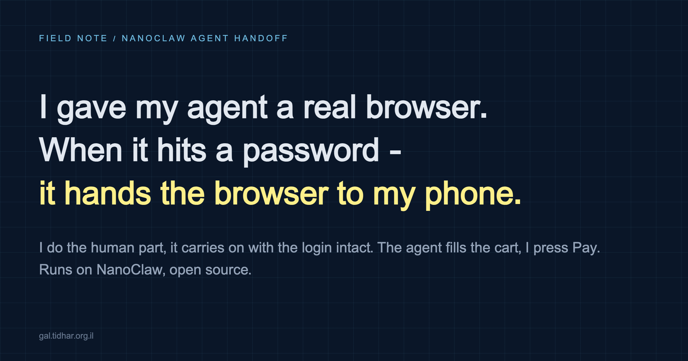

Agents · Human-in-the-loop · Security
The agent fills the cart, I press Pay
I sent my agent to buy toilet paper on Amazon. When it hit the login screen it did not get stuck - it sent a link to my phone, and I was looking at its browser, live, in my hand. I typed the password, handed it back, and it carried on with the login intact. It never saw a single character. This post is how that works, why the security model is the interesting half, and the four failures along the way that each looked like something they weren't.

The shape of the thing
On a desktop this problem is mostly solved: a local agent can borrow your own browser, your own logins, your own screen, with you in the chair next to it. The hard version is the remote one. My personal agent runs on NanoClaw (open source, MIT) on a small VPS and talks to me over Telegram - there is no shared screen, no shared browser, and no sane way to type a password for it from the street. It now has a real Chrome it can drive - not a headless scraper, a full browser running on Cloudflare's Browser Run, spoken to over raw CDP by a ~460-line Node service on my own box. No Worker, no deployment target: Browser Run accepts a plain WebSocket with a Bearer token from anywhere, so the whole integration is an ordinary host service.
The agent browses, searches, compares, fills a cart. And when it reaches something it must not touch - a password, a 2FA code, a CAPTCHA, a Pay button - it does not fail and it does not ask me to paste a credential into chat. It requests a handoff: Cloudflare mints a live-view URL for the session, the agent sends it to me in its own voice, and my phone becomes the browser. I do the human part. The agent polls, sees the page change, and continues in the same session, cookies and all.
Cloudflare.getLiveView / handoff / getHandoffState) rather than a live view you build the agent-signals-for-help protocol on top of.Two details people always ask about. The live-view URL is ~580 characters, so nobody types it - it arrives as a chat message my phone can tap. And the login is a one-time cost: the session's cookies persist, so the next task on that site goes straight in.
The failure that looked like a bug: waiting is the expensive operation
The hard question the docs never answer: does a cloud browser session survive a human taking fifteen minutes to find their phone? My first two attempts said no. One cut out at 456 seconds with the live view showing "Disconnected from browser" - which reads exactly like a broken keep-alive. I debugged the heartbeat. The heartbeat was fine.
The free tier allows 10 minutes of browser time per day. Holding a session open while a human ambles over costs browser time - so the 30-second heartbeat that carries a session through a slow handoff was spending the very quota it needed to keep the session alive. The mechanism and its own failure mode, in one loop. The code was right the whole time; the plan was the bug.
Confirmed by upgrading to the $5/month paid plan and re-running: a 925-second handoff completed with the session alive on the other side. The general lesson generalises well beyond browsers: a resource limit and a logic error produce the same symptom, and the resource limit is the one with no stack trace.
Three smaller finds, each worth its line
The panel that covered the login
Cloudflare's handoff panel is fixed to the top-right corner of the live view and cannot be dismissed. That is precisely where every site on earth puts "Sign in". The first real handoff landed me on a cart page hunting for a link underneath the panel, swearing. The fix is a rule, not code: the agent navigates to the login form before handing over. The form is centre-page; nothing covers it.
The Done button nobody needed
The flow originally asked me to press Done to return control. I asked myself the obvious question - do I have to? - and probed it: the agent can read and navigate the page while the handoff is still active. So it just watches for the outcome (the account page becoming reachable) and carries on. The button is now a shortcut for the impatient. We had asked a human to tell the computer something the computer could already see.
The browser has a geography
Prices came back in SEK and delivery defaulted to Sweden, because a datacentre browser geolocates to wherever the datacentre is. Obvious in hindsight, invisible until a real basket total looked wrong. Unresolved for now, and worth knowing before you trust any localized number a cloud browser shows you.
The security model - the half that generalises
A logged-in browser is private data, and an agent browsing the web reads attacker-controlled content all day. Add the ability to communicate outward and you have all three parts of the lethal trifecta. So the boundaries are structural, not behavioral:
- A fail-closed host allowlist. One file on the host, one hostname per line, HTTPS only. Empty or missing file means the agent reaches nothing. It lives on the host specifically so the agent cannot widen its own reach - because if the agent could, a poisoned page could talk it into it.
- The agent may ask, never grant. It can request a new host; the request arrives on my phone with the hostname, the agent's stated reason, and approve/deny buttons. The agent gets back a request id and nothing else. The approval endpoint is a separate listener on loopback, reachable only through a tunnel - nothing on the container networks can answer it. Authority arrives from outside the chat, or not at all.
- Credentials never enter the container. A gateway injects them per request at the egress proxy, scoped per agent by policy. Verified live: the intended agent gets
200; every other agent getscredential_not_found; an agent not on any list getsblocked_by_policy. - Deny-by-default beats enumeration. The blocking rule names no identity, so it also refuses agents that do not exist yet - which matters, because agents here are created lazily on first use, and a hand-written list would have missed them.
- Payment is the hard floor. The agent fills the cart and stops. The handoff exists so that stopping there is a feature, not a dead end.
One honest caveat: the phone-approval flow weakens the boundary it replaced. It moves the decision from "the human edits a file, offline, in their own time" to "the human taps yes on a phone", and the agent is the one proposing the host. That was a deliberate trade for usability - the mechanism that keeps it honest is that I read the hostname before tapping. Saying that plainly beats pretending the new flow is strictly better.
And a scoping rule that costs nothing: keep the browser's logins to accounts you would accept losing. Not the bank, not your primary Google. For anything the agent might one day complete alone, a low-limit virtual card is the right shape of paranoia.
One more misdiagnosis, as a bonus
Mid-test, I restarted the agent daemon to load a new skill. The restart SIGTERMs the running container - killing, silently, the turn the agent was in the middle of. Its progress log at that moment read:
Progress: Dismiss cookie banner and search for toilet paperFrom my side of the chat: the agent stopped typing and nothing ever arrived. I reported it as the browser being broken. It wasn't - the deploy had destroyed the in-flight reasoning, and the user experience of that is indistinguishable from a bug in whatever you just shipped. If you run long-lived agents: check for a live container before restarting, and if a person is mid-conversation, wait or tell them.
That was the fourth failure of the evening that looked like something it wasn't. A quota looked like a broken heartbeat. A deploy looked like a hung agent. An approved request looked like an expired one (the first version deleted approval records 60 seconds after the decision, so an agent polling slightly late was told the request never existed - immediately after I had approved it; verdicts now outlive their tokens by ten minutes). And a stale display name nearly granted the browser - and my logged-in sessions - to an entirely different agent that happened to share the name.
The numbers
| Item | Value |
|---|---|
| Cloudflare Workers Paid | $5/month, 10 browser-hours included, $0.09/hr after |
| Free tier that bit me | 10 minutes of browser time per day |
| Longest verified handoff | 925 seconds, session alive after |
| Live-view URL length | ~580 characters - goes as a chat link, never typed |
| Whole evening's testing | a few cents of the included allowance |
Nothing was ordered, by the way. We proved the flow to the edge of the Pay button and stopped - there was toilet paper at home.
What it is actually for
Proven: shopping with a human-in-the-loop payment, and persistent logins that make authentication a one-time cost. Designed for but not yet exercised: anything behind a login with no API - order histories, bookings, account pages - and 2FA flows generally, where the agent reaches the code prompt and the human supplies the code. Not a bot-evasion story: a datacentre browser is still fingerprintable, and the honest claim is "a real browser plus a nearby human gets further than a scraper", nothing more.